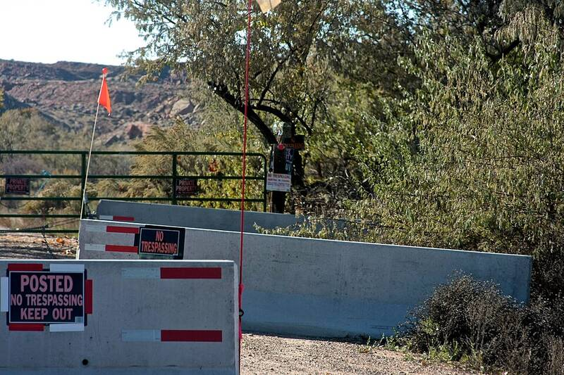

Skinwalker Ranch
Uintah Basin, Utah

A ranch with long-reported strange lights, animal deaths, and other anomalies. It was a major research site for BAASS under the DIA-funded AAWSAP program. 1
Open in the interactive Watcher
Related
- The Pentagon paid for UFO and paranormal research at Skinwalker Ranch Claim
- Brandon Fugal Person
- Harry Reid Person
- Robert Bigelow Person
- George Knapp Person
- Colm Kelleher Person
Sources
- Skinwalker Ranch Wikipedia